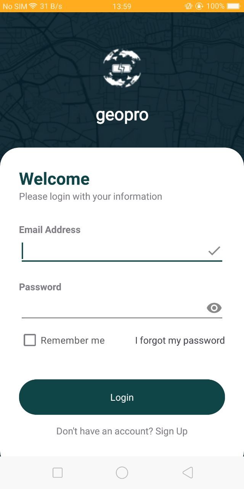
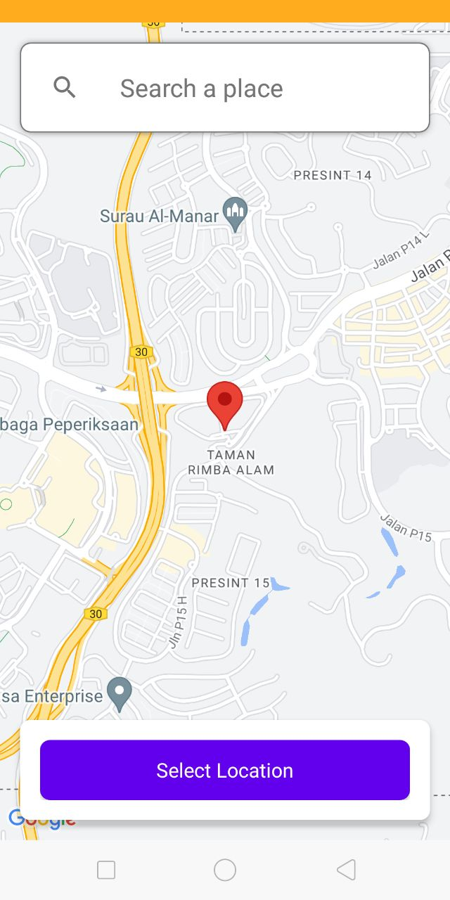

GeoPro
Smart Location-Based Battery Saver for Android
Description:
GeoPro is an innovative mobile application designed to optimize battery usage by leveraging location-based task automation. By intelligently adjusting device settings based on the user's location, GeoPro ensures that your device runs efficiently, extending battery life and enhancing overall performance. This project aims to contribute to sustainability by reducing the environmental impact of frequent charging.
Key Features:
- Location-Based Automation:
- Automatically adjusts settings like Wi-Fi, Bluetooth, brightness, and volume based on your location.
- Uses geofencing to activate or deactivate profiles as you enter or leave designated areas.
- User-Friendly Profile Management:
- Create, edit, and manage multiple profiles for different locations and scenarios.
- Easy-to-use interface for setting up and customizing profiles to suit your needs.
- Smart Notifications and Suggestions:
- Notifies users to create new profiles based on frequently visited locations.
- Suggests optimal settings for new profiles to enhance battery efficiency.
- Enhanced Security and Privacy:
- Prioritizes user privacy by securely handling location data.
- Provides robust authentication and profile protection features.
Technologies Used:
- Android Development (Java/Kotlin)
- Firebase Realtime Database and Authentication
- Google Maps API and Location Services
- Geofencing API



